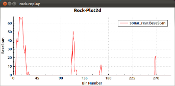

All standard qt and qwt widgets can be used from ruby. Furthermore rock is shipped with a collection of widgets for some basic data analysis.
ImageView: Widget for displaying camera images (base/frame/frame, base/frame/FramePair)
require 'vizkit'
orocos.run 'my_camera' do
camera = Orocos.name_service.get 'camera'
camera.start
Vizkit.display camera.frame
Vizkit.exec
end

PlotWidget: Widget for plotting sensor data
require 'vizkit'
orocos.run 'my_sensor' do
widget = Vizkit.default_loader.Plot2d
sensor = Orocos.name_service.get 'sensor'
sensor.configure
sensor.start
sensor.data.connect_to do |sample,_|
widget.update sample.field2.to_f,"sample1"
widget.update sample.field2.to_f,"sample2"
end
widget.show
Vizkit.exec
end

ArtificialHorizon: Widget for visualizing a rigid body state